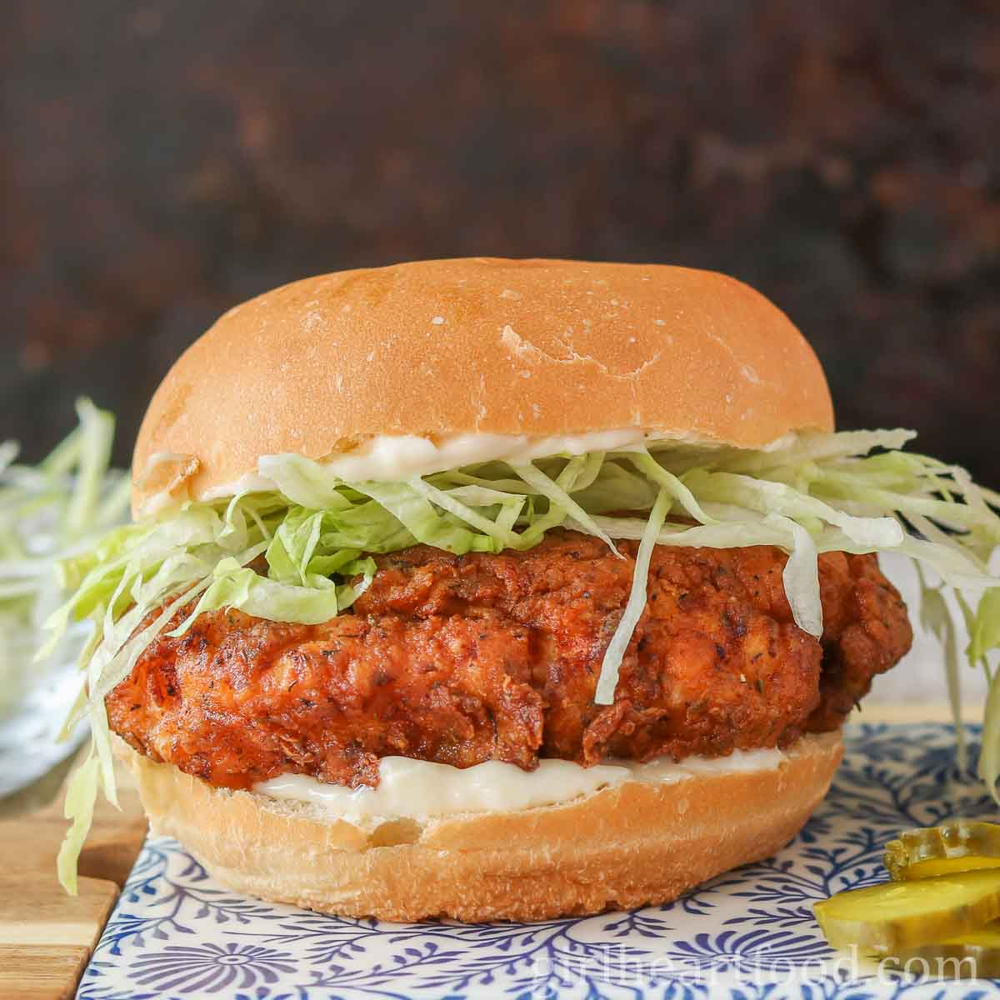

CHICKEN BURGER

Butchies buttermilk chicken sandwich
Butchies is known for its crispy fried chicken, so we got our hands on the recipe for you to try at home. Marinating the chicken in buttermilk overnight makes it super succulent and juicy
INGREDIENTS
- skinless chicken breasts 4
- buttermilk 350ml
- plain flour 100g
- dried oregano 1 tsp
- smoked paprika 1 tsp
- cayenne pepper 2 tsp
- garlic powder or granules 1 tsp
- vegetable oil for frying
STEPS
- Lay each chicken breast between 2 pieces of clingfilm and bash with a rolling pin until 2cm thick.
- Add to a bowl with the buttermilk, cover and chill for at least 2 hours but preferably overnight.
- Mix the flour, oregano, paprika, cayenne pepper, garlic powder and some seasoning on a large plate.
- Remove the chicken pieces from the buttermilk and dredge in the seasoned flour, shaking off any excess.
- Fill a large pan no more than a third full with vegetable oil and heat to 175C or until a piece of bread browns in 40 seconds.
- Cook the chicken, in batches, for 4-5 minutes turning half way, until deep golden brown.
- Drain on kitchen paper and keep warm while you fry the rest.
- Spread a dollop of chipotle mayo across one bun half and a dollop of guacamole on the other.
- Pile up the sandwich with lettuce, streaky bacon, gherkins and chicken and press together.